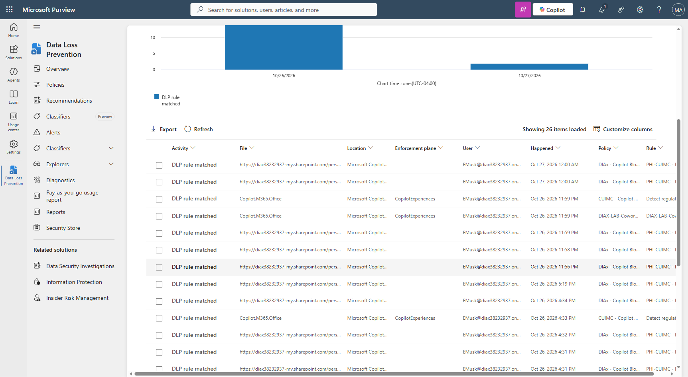

Suppress external web grounding for a sensitive research prompt
This page documents the actual research-protocol detector, web-search-only DLP action, audit evidence, and scope control from the lab.
ExperienceCowork
ResultPASS
Scope controlT8b PASS
What was configured
Custom detector
DIAX-LAB-Cowork-Synthetic-Research-ProtocolPrimary pattern
\b(DIAXPROTO-[0-9]{6})\bSupporting terms
unpublished protocol or confidential research, within 300 charactersConfidence
High, 85-100
DLP policy
DIAX-LAB-Cowork-02-Block-Sensitive-WebSearchCondition
Copilot
UploadText activity containing at least one match of the custom research detectorAction
RestrictWebGrounding: true; no full prompt-block actionScope
Lab Testers group only; control identity intentionally outside that group
Important: only Performing web searches was selected. A passing result does not require Copilot to stop answering; it may answer from permitted internal or model knowledge.
What was tested
- The detector matched
DIAXPROTO-731946with the required research wording. - A public research summary and the short value
DIAXPROTO-12did not match. - T2 ran in Cowork at approximately 16:31 and again at 23:59 after the policy was on.
- An early Activity Explorer query showed no P2 rows and was recorded as inconclusive at that time.
- A later complete audit query showed P2 rule matches at 16:30 and 23:59, aligned with both T2 runs.
- T8b, run as a user outside the Testers group, returned web results without a policy banner.
Audit evidence

What this result does and does not establish
Supported by the lab
- The custom research detector validated against positive and negative fixtures.
- The P2 rule matched both sensitive research web-search runs.
- The non-Testers control behaved as expected.
Still tenant-dependent
- The screenshot is an audit view, not proof of every source Copilot considered.
- Audit ingestion lag can make an early query appear empty.
- The synthetic detector is not a comprehensive research-data classifier.